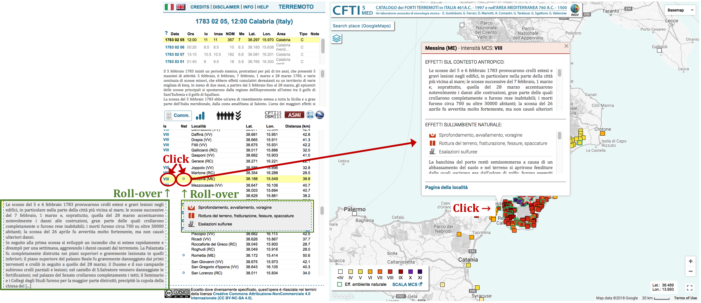

La presente guida intende fornire all'utente una panoramica delle funzionalità dell'interfaccia web. Si rimanda alla sezione INFO per informazioni relative alla struttura e ai contenuti del catalogo.


L’interfaccia web è organizzata secondo lo schema seguente, dove a sinistra sono mostrate le tre modalità di accesso ai contenuti del catalogo (per terremoti, località o effetti sismo-indotti sull'ambiente naturale) e a destra le due tipologie di pagine descrittive di approfondimento del singolo terremoto o della singola località. Le frecce indicano i collegamenti tra le singole pagine.
In generale, tutte le pagine mostrano uno schema ricorrente suddiviso in una sezione informativa a sinistra (con pannello di selezione e/o tabelle e/o informazioni varie) e una mappa a destra contenente i marker corrispondenti a terremoti / località / effetti ambientali / risentimenti elencati nella tabella a sinistra.
In tutte le pagine, nella sezione informativa a sinistra sono presenti due icone per l’export in formato testuale e kml dei dati visualizzati (vengono esportati i dati relativi alla selezione corrente).
Sulla mappa sono inoltre sempre presenti:
- Spazio di ricerca dei nomi geografici (tramite motore di ricerca Google Maps)
- Icone per aggiunta di layer alla mappa:
- l'icona in alto permette di aprire una finestra dove sono elencati i seguenti layer informativi visualizzabili (attivabili solo a determinate scale):
- Confini Comunali ISTAT 2016
- Confini Provinciali ISTAT 2016
- Confini Regionali ISTAT 2016
- Carta Topografica IGM in scala 1:25.000 (Portale Cartografico Nazionale – PCN)
- Carta Topografica IGM in scala 1:100.000 (PCN)
- DISS Individual Seismogenic Sources – ISS (INGV)
- DISS Composite Seismogenic Sources – CSS (INGV)
- DISS Subduction Zones (INGV)
- Carta Geologica 1:100.000 (ISPRA)
- Catalogo Frane (PCN), con legenda accessibile cliccando su ‘Legenda’
- l'icona in basso permette di aprire una finestra con un pannello di selezione tramite il quale si può visualizzare sulla mappa la sismicità strumentale fornita in tempo reale da INGV-CNT (a partire dal 1985). Dopo aver impostato i criteri di selezione, gli epicentri vengono mostrati sulla mappa al click su 'OK'. Nella figura in basso è mostrato un esempio di visualizzazione contemporanea di epicentri del CFTI5, sismicità strumentale e layer DISS Composite Seismogenic Sources.
- Legenda dei marker presenti sulla mappa
- Menu di selezione delle mappe di base Google
- Coordinate geografiche corrispondenti alla posizione del cursore.

In tutte le tipologie di pagine, i marker e alcuni elementi delle righe delle tabelle sono cliccabili. Al click viene visualizzata una finestra informativa sulla mappa (in corrispondenza del marker selezionato) e la corrispondente riga della tabella viene evidenziata in giallo. La finestra informativa contiene le informazioni relative al terremoto/località/effetto ambientale/osservazione macrosismica selezionata e i link alla pagina di approfondimento della singola località e/o del singolo terremoto. Di seguito è mostrato uno schema dei collegamenti tra tutte le tipologie di finestre informative delle varie pagine dell’interfaccia.
Nelle pagine del singolo terremoto, della singola località e nella pagina di accesso per effetti ambientali, nelle finestre informative vengono visualizzati dei testi descrittivi (commenti storico-critici) degli effetti sul contesto antropico e sull'ambiente naturale. Nelle descrizioni sono contenuti anche i riferimenti bibliografici, con elenco numerato alla fine del testo, che a loro volta rimandano al link del pdf del testo della fonte. Le fonti possono essere presenti sotto forma di trascrizioni (PDF_T) o scansioni della fonte originale (PDF_R). A tali pdf si accede con click sulle scritte “PDF_T” e/o “PDF_R”, presenti in coda al riferimento bibliografico, ove il pdf è disponibile.
Nei file pdf è presente un link al quale si può reperire la corretta citazione per l’utilizzo del materiale messo a disposizione.
Si elencano di seguito alcune informazioni utili per la navigazione:
- Al click sul banner CFTI5Med è possibile tornare alla home iniziale dell'interfaccia web (accesso per terremoti)
- La navigazione nell'interfaccia web è guidata da un help contestuale che si attiva con roll-over (passaggio sopra) del mouse su immagini e scritte.
- Tutte le tabelle sono ordinabili, cliccando sulle intestazioni delle singole colonne.
- La visualizzazione delle selezioni fatte nei menù nelle tre tipologie di accesso della pagina di accesso al catalogo viene effettuata al click sul pulsante “OK”.
- I colori di sfondo dei titoli visualizzati nelle finestre informative sono indicativi del tipo di informazione mostrata: con colore azzurro chiaro per le informazioni relative ai terremoti e rosso chiaro per le informazioni relative alle località. Tali colori corrispondono a quelli visualizzati come sfondo del menu info|disclaimer|help in alto a sinistra delle pagine descrittive del singolo terremoto e della singola località e delle pagine di accesso per terremoto e per località.
- Le localizzazioni geografiche sono rappresentate in coordinate geografiche (WGS84) espresse in gradi approssimati a tre decimali.
- Quando in mappa sono rappresentati molteplici marker di epicentri sovrapposti (o molto vicini tra di loro), al click questi assumono colore blu e vengono disposti a cerchio con barre nere che li collegano alla loro posizione originaria in mappa. I marker selezionati mantengono le loro dimensioni legate all'intensità epicentrale secondo la scala mostrata nella legenda. Con un ulteriore click su un marker blu viene visualizzata la finestra informativa come per qualunque altro marker della mappa (figura di seguito).
Inizialmente viene caricato l'accesso per terremoti. Dal menu in alto a sinistra della mappa si può selezionare un diverso tipo di accesso, a scelta tra terremoti, località ed effetti ambientali, come mostrato nella figura di seguito.
Le tre tipologie di accessi della pagina di accesso al catalogo sono strutturate in maniera analoga con:
- PANNELLO DI SELEZIONE: in alto a sinistra, permette di filtrare i dati secondo criteri impostati dall’utente (la visualizzazione dei dati selezionati è effettuata al click sul pulsante “OK”)
- TABELLA: sotto il pannello di selezione, contiene l’elenco dei terremoti/località/effetti ambientali selezionati, corrispondenti ai marker presenti sulla mappa
- MAPPA: mostra i marker corrispondenti a ogni riga della tabella.
L'accesso per terremoti rappresenta la home iniziale dell’interfaccia web e permette di visualizzare la lista dei terremoti presenti nella banca dati CFTI. Di default al caricamento della pagina vengono mostrati i forti terremoti in area italiana. Per forti si intendono i terremoti con intensità epicentrale maggiore o uguale a VIII (gradi MCS). Tale selezione può essere modificata tramite il pannello di selezione. Per una spiegazione sulle tipologie di epicentri si veda la pagina INFO alla sezione Localizzazione dei singoli terremoti: tipologia e rappresentazione in mappa.
Al click su un singolo terremoto dalla tabella (data del terremoto) o dai marker sulla mappa, si apre una finestra informativa da cui si può accedere alla pagina di approfondimento del singolo terremoto (cliccando su ‘Pagina del terremoto’).
Il pannello di selezione nella sezione in alto a sinistra nella pagina permette di filtrare i terremoti presenti nella banca dati CFTI sulla base dei seguenti criteri:
- Periodo temporale: per i terremoti di area italiana questo ha limiti massimi compresi tra 461 a.C. al 1997, per i terremoti di area mediterranea dal 760 a.C. al 1500
- Area: è possibile effettuare selezioni sulla base di intervalli di latitudine e longitudine o mediante un rettangolo grafico sulla mappa (attivabile con pulsante dal pannello di selezione; figura di seguito) e dal menù a tendina è possibile scegliere se visualizzare i terremoti italiani, mediterranei o tutti. Per terremoti italiani si intendono tutti i terremoti con epicentro in Italia o in area mediterranea che hanno avuto effetti sul territorio italiano, mentre per terremoti mediterranei si intendono i terremoti che hanno avuto effetti solo al di fuori del territorio italiano.
- Intensità epicentrale o magnitudo equivalente: le due tipologie di selezione sono in alternativa. Di default è visualizzata la selezione per intensità epicentrale, quella per magnitudo si attiva cliccando sul riquadro corrispondente. All’interno di questa sezione del pannello di selezione si può inoltre attivare tramite check-box la visualizzazione dei terremoti falsi.
Le icone 'WMS' e 'WFS' permettono di accedere ai servizi web OGC per l'intero catalogo (tutti gli epicentri contenuti nel CFTI5Med). Al click sulle icone viene copiato il link del servizio OGC corrispondente, che viene anche contestualmente visualizzato sopra l'icona.
Tra il pannello di selezione e la tabella è mostrato un grafico temporale dei terremoti selezionati (anno vs. intensità epicentrale). Al roll-over sulle singole barre dell’istogramma, vengono visualizzate le informazioni dei singoli terremoti. Tale grafico mostra i terremoti corrispondenti a quelli presenti nella tabella e nella mappa, risultato della selezione tramite il pannello. Al click sulla lente d’ingradimento (in alto a sinistra del grafico), il grafico si allarga orizzontalmente. Al click sull’icona di salvataggio, è possibile salvare un’immagine .png del grafico.
La tabella contiene l’elenco dei terremoti presenti nella banca dati, selezionati in basi ai criteri scelti dall’utente nel menu soprastante. Per ogni terremoto sono fornite le seguenti informazioni:
- Data: data del terremoto (anno mese giorno)
- Ora: ora del terremoto in Greenwich Mean Time (ora:minuti:secondi)
- Io: intensità epicentrale (MCS)
- Imax: intensità massima (MCS)
- NOM: numero di osservazioni macrosismiche per il terremoto
- Me: Magnitudo equivalente calcolata sulla base delle osservazioni macrosismiche
- Area epicentrale
- Note:
- F: falso
- D: dubbio
- S: localizzazione epicentrale basata su un solo dato di intensità
- E: localizzazione epicentrale da catalogo estero
- N: attualmente senza osservazioni macrosismiche
- Liv: livello di approfondimento dello studio
 approfondito
approfondito- intermedio
- speditivo
In questa modalità di accesso vengono visualizzate le località presenti nella banca dati CFTI, rappresentate in mappa con icone di colore corrispondente alla massima intensità risentita al sito (gradi MCS), secondo la legenda in basso a sinistra nella mappa. Di default al caricamento vengono visualizzate tutte le località contenute della banca dati. Tale selezione può essere modificata tramite il pannello di selezione.
Al click su una singola località dalla tabella (nome della località) o dai marker sulla mappa, si apre una finestra informativa da cui si può accedere alla pagina di approfondimento (cliccando su ‘Pagina della località’).
Tramite il pannello di selezione posto nella sezione in alto a sinistra della pagina, è possibile effettuare una ricerca delle località presenti nella banca dati ( a sinistra) e filtrare l’elenco delle località secondo un intervallo di massima intensità risentita (gradi MCS). La selezione, avviata al click sul pulsante “OK”, modifica contemporaneamente l’elenco delle località visualizzate in mappa ed elencate nella tabella.
La tabella contiene l’elenco delle località selezionate dall'utente in base alle scelte di intervallo di intensità massima risentita al sito. Di default vengono mostrate tutte le località presenti nella banca dati. Per ogni località sono mostrate le seguenti informazioni:
- Località: nome della località
- Prov/Naz: provincia italiana o nazione
- NOM: Numero di Osservazioni Macrosismiche per la località
- NNat: Numero di effetti sismo-indotti sull'ambiente naturale
- Imax: Intensità al sito massima (MCS)
- Lat: latitudine della località
- Lon: longitudine della località
In questa modalità di accesso vengono visualizzati gli effetti sismo-indotti sull'ambiente naturale presenti nella banca dati CFTI, rappresentati in mappa con icone variabili a seconda della tipologia di effetto. Tutte le icone sono riportate nel pannello di selezione in alto a sinistra nella pagina (una descrizione per ciascun simbolo è mostrata all roll-over del mouse sulle icone). Di default al caricamento vengono visualizzati tutti gli effetti presenti nella banca dati. Tale selezione può essere modificata tramite il pannello di selezione.
Al click su una località dalla tabella (nome della località) o dai marker sulla mappa, si apre una finestra informativa che mostra l’elenco di tutti gli effetti ambientali relativi ad una singola località (ovvero relativi a tutti i terremoti cui sono associati effetti ambientali nella località). Nella tabella vengono evidenziate in giallo tutte le righe corrispondenti a tali effetti. Dalla finestra informativa è possibile accedere, tramite link di fianco al nome della località, alla pagina di approfondimento della singola località e, tramite link di fianco ad ogni stringa di informazioni su un terremoto, alla pagina di approfondimento del singolo terremoto.
Il pannello di selezione è costituito da icone-pulsanti corrispondenti a tutte le tipologie di effetti sismo-indotti sull'ambiente naturale. Al roll-over del mouse su tali icone, viene mostrata la descrizione testuale della tipologia di effetto corrispondente. Con un click è possibile selezionare (icona colorata) o deselezionare (icona grigia) il corrispondente effetto ambientale. La selezione può essere effettuata anche per macro-categorie, tramite le check-box presenti di fianco ai titoli dei pannelli di selezione. La selezione, avviata al click sul pulsante “OK”, modifica contemporaneamente l’elenco degli effetti ambientali visualizzati in mappa ed elencati nella tabella.
La tabella contiene l’elenco degli effetti sismo-indotti sull'ambiente naturale presenti nella banca-dati, selezionati nel pannello soprastante. Di default vengono mostrati tutti gli effetti presenti nella banca dati.
- Tipo: tipologia di effetto sismo-indotto sull'ambiente naturale. A sinistra un simbolo corrispondente alle icone del menu di selezione, a destra un pallino pieno o vuoto, rispettivamente per effetti associati al singolo terremoto o associati all’intera sequenza sismica
- Data: data del singolo terremoto o date dei terremoti appartenenti a una sequenza sismica (anno, mese, giorno), a seconda che l’effetto ambientale sia associato al singolo terremoto o all’intera sequenza sismica (pallino pieno o vuoto rispettivamente).
- Ora: ora del terremoto in Greenwich Mean Time (ora:minuti:secondi)
- Io: intensità epicentrale (MCS)
- Me: Magnitudo equivalente calcolata sulla base delle osservazioni macrosismiche
- Area epicentrale
La pagina del singolo terremoto mostra e descrive gli effetti sul contesto antropico e sull'ambiente naturale. La struttura della pagina è mostrata nella figura di seguito e consiste in:
- Parametri del terremoto e dell'intera sequenza sismica: tabella con i parametri del terremoto e delle scosse del catalogo appartenenti alla stessa sequenza sismica. In giallo è evidenziato il terremoto visualizzato in mappa. La tabella contiene le seguenti informazioni:
- Data: data (anno, mese, giorno)
- Ora: ora (ore, minuti, secondi)
- Io: intensità epicentrale (MCS)
- Imax: intensità massima (MCS)
- NOM: numero di osservazioni macrosismiche
- Me: Magnitudo equivalente calcolata sulla base delle osservazioni macrosismiche
- Lat: latitudine dell’epicentro
- Lon: longitudine dell’epicentro
- Area epicentrale
- Tipo di epicentro:
- C: calcolato
- L: singola località
- R: regione, area
- H: ipotizzato
- NP: non parametrizzato
- Note:
- F: falso
- D: dubbio
- S: localizzazione epicentrale basata su un solo dato di intensità
- E: localizzazione epicentrale da catalogo estero
- N: attualmente senza osservazioni macrosismiche
- Informazioni sugli effetti: posta sotto la tabella con i parametri della sequenza, è costituita da un testo descrittivo con la sintesi dei maggiori effetti della sequenza sismica, da un pulsante “Comm.” da cui si accede a una scheda di approfondimento sul terremoto e delle icone che mostrano ulteriori informazioni (numero di morti, stato di avanzamento della ricerca, eventuali differenze rispetto alla versione precedente del catalogo) sulla sequenza (si veda la sezione "Informazioni descrittive della sequenza sismica" per ulteriori informazioni). Nei casi per cui i commenti storico-critici non sono disponibili (poichè ancora in fase di elaborazione), viene visualizzata una frase che sintetizza lo stato di avanzamento del lavoro con un eventuale rimando alle pubblicazioni di riferimento.
- Link esterni a CPTI15-DBMI15 (Catalogo Parametrico dei Terremoti Italiani 15 - DataBase Macrosismico Italiano 15) e ASMI (Archivio Storico Macrosismico Italiano), tramite le seguenti icone (al roll-over del mouse appare un testo che spiega i differenti casi possibili, elencati di seguito; per maggiori dettagli si veda la pagina INFO alla sezione Relazioni con CPTI e ASMI):
 terremoto presente in ASMI, l'icona è cliccabile e rimanda alla corrispondente pagina di ASMI;
terremoto presente in ASMI, l'icona è cliccabile e rimanda alla corrispondente pagina di ASMI; terremoto non presente in ASMI, l'icona non è cliccabile;
terremoto non presente in ASMI, l'icona non è cliccabile;- CFTI4Med è lo studio di riferimento del terremoto per CPTI15-DBMI15 e i contenuti parametrici del CFTI5Med sono gli stessi del CFTI4Med: l'icona è cliccabile e rimanda alla pagina corrispondente di CPTI15;
- CFTI4Med non è lo studio di riferimento del terremoto per CPTI15-DBMI15 oppure CFTI4Med è lo studio di riferimento ma la distribuzione degli effetti macrosismici del CFTI5Med è stata modificata rispetto a quella del CFTI4Med: l'icona non è cliccabile;
 terremoto non presente in CPTI15-DBMI15 oppure antecedente all'anno 1000, intervallo temporale non coperto da CPTI-DBMI15: l'icona non è cliccabile.
terremoto non presente in CPTI15-DBMI15 oppure antecedente all'anno 1000, intervallo temporale non coperto da CPTI-DBMI15: l'icona non è cliccabile.
- Tabella degli effetti del terremoto: elenco delle località con osservazioni macrosismiche e/o effetti ambientali per il terremoto corrente (descritta in dettaglio di seguito)
- Mappa degli effetti: tutte le località elencate nella tabella sono rappresentate sulla mappa con un’icona di colore variabile in base al valore di intensità (gradi MCS) secondo la legenda mostrata in basso a sinistra. Le icone con bordo verde rappresentano le località dove sono presenti effetti sismo-indotti sull'ambiente naturale. Nella legenda è inoltre presente un link a una pagina contente la descrizione della scala Mercalli - Càncani-Sieberg 1932.
Come mostrato nella figura di seguito, al click su una riga della tabella (intensità o effetto ambientale), o su un marker della mappa, viene visualizzata una finestra informativa che mostra la descrizione degli effetti alla località selezionata (sul contesto antropico e/o sull’ambiente). La descrizione degli effetti sul contesto antropico e l'elenco degli effetti sismo-indotti sull'ambiente naturale possono essere visualizzati anche con semplice roll-over del mouse sull'intensità al sito e sul pallino corrispondente agli effetti ambientali (se presente) nella tabella. Si noti che, per gli effetti ambientali, al roll-over sulla tabella viene visualizzata solo la lista delle tipologie di effetti, mentre nella finestra informativa sono mostrati sia la lista sia la descrizione testuale (e relativa bigliografia).

La tabella riporta l’elenco delle località per le quali sono riportati effetti che possono essere relativi al contesto antropico o ambientale. La tabella contiene le seguenti informazioni:
- Is: Intensità MCS al sito, per il dato terremoto. Oltre ai gradi della scala MCS, in alcuni casi specifici sono utilizzate delle sigle secondo il seguente schema:
- S(V) forte risentimento senza elementi per attribuire o escludere danni
- F(IV-V) terremoto avvertito
- NF terremoto non avvertito
- G indicazione generica di danni in uno specifico sito
- N riscontro negativo nelle fonti coeve
- NC non classificato, si rimanda ai commenti analitici Effetti su un singolo edificio:
- A(IX) crolli o lesioni estese nei muri portanti
- B(VIII) crolli nella sola parte alta dell'edificio (lanterna, cupola, frontone ecc.)
- C(VII) crolli parziali del tetto
- D(VI) cadute di cornicioni, fessurazioni nei muri esterni
- E(VI-VII) indicazione generica di danno all'edificio
- Nat: effetti sismo-indotti sull'ambiente naturale. Ove presenti, sono indicati con pallino pieno (se associati al singolo terremoto) o pallino vuoto (se associati all’intera sequenza sismica)
- Località: nome della località e provincia o nazione
- Lat: latitudine
- Lon: longitudine
- Distanza (km): distanza della località dall’epicentro macrosismico
È bene tenere presente che tutte le informazioni descrittive degli effetti consultabili a partire da un singolo terremoto si riferiscono all’intera sequenza sismica. Con un click su pulsante “Comm.”, viene visualizzata una finestra contenente tutti i commenti storico-critici disponibili e la bibliografia, come visibile nella figura di seguito. I commenti storico-critici sono suddivisi in diverse categorie e possono essere anche solo parzialmente disponibili per i diversi periodi sismici. Le categorie sono le seguenti (per maggiori dettagli si veda la pagina INFO alla sezione L'informazione sui terremoti):
- Sequenza
- Stato delle conoscenze
- Risposta sociale e istituzionale
- Osservazioni e teorie scientifiche
- Effetti sul contesto antropico
- Effetti sull'ambiente naturale
La bibliografia, relativa all'intera sequenza sismica, contiene una tabella costituita dalle seguenti colonne (per maggiori dettagli si veda la pagina INFO alla sezione Area 7. Bibliografia):
- Autore
- Titolo
- Tipo di fonte
- Anno
- Luogo
- PDF_T: contiene il link al pdf della fonte trascritta, ove disponibile
- PDF_R: contiene il link al pdf della scansione della fonte originale, ove disponibile
Per i terremoti di area mediterranea (non italiani), nella finestra contenente i commenti storico-critici viene fornito un estratto in PDF delle sintesi descrittive contenute nei due volumi di riferimento (Guidoboni et al., 1995; Guidoboni e Comastri, 2005)
Quando tra gli effetti del terremoto sono note perdite di vite umane, di fianco al pulsante “Comm.” compare un’icona che indica l’ordine di grandezza del numero di morti. Al roll-over su questa icona sono visualizzate informazioni sul numero e sull’affidabilità di questo dato, seguite dalla legenda (per maggiori dettagli si veda la pagina INFO alla sezione Dati sul numero delle vittime).
A destra del pulsante “Comm.” è mostrata un'icona che indica il livello di approfondimento dello studio sulla sequenza sismica, con la seguente simbologia:
- studio approfondito
- studio intermedio
- studio speditivo
A sinistra dell'icona relativa a CPTI15-DBMI15, in alcuni casi compare un'icona che specifica se lo studio del terremoto corrente ha subito variazioni nella versione 5 del CFTI rispetto alla precedente. In particolare possono presentarsi i casi seguenti:
- terremoto non presente nella versione 4 del CFTI
 terremoto ristudiato rispetto alla versione 4 del CFTI
terremoto ristudiato rispetto alla versione 4 del CFTI terremoto con variazioni e/o correzioni rispetto alla versione 4 del CFTI
terremoto con variazioni e/o correzioni rispetto alla versione 4 del CFTI
La pagina della singola località riporta la storia sismica della località, intesa come l’elenco e la descrizione di tutti i terremoti presenti nella banca dati CFTI che hanno avuto effetti (sul contesto antropico o sull'ambiente naturale) nella località mostrata.
La pagina si presenta con un grafico temporale, una tabella e una mappa in cui sono riportati tutti i terremoti che compongono la storia sismica e la località (quest'ultima rappresentata con icona a goccia gialla). Il grafico temporale è analogo a quello già descritto per la pagina home di accesso ai terremoti, ma in questo caso le barre sono cliccabili.
Come mostrato nella figura di seguito, al click su una barra del grafico, una riga della tabella (intensità, effetto ambientale o data del terremoto), o su un marker della mappa, viene visualizzata una finestra informativa che mostra i parametri del terremoto selezionato (con link ‘Pagina del terremoto’ alla corrispondente pagina di approfondimento) e la descrizione degli effetti alla località (sul contesto antropico e/o sull'ambiente naturale). La descrizione degli effetti sul contesto antropico e l'elenco degli effetti sismo-indotti sull'ambiente naturale possono essere visualizzati anche con semplice roll-over del mouse sulla barra del grafico, sull'intensità al sito e sul pallino corrispondente agli effetti ambientali (se presente) nella tabella. Si noti che, per gli effetti ambientali, al roll-over sulla tabella viene visualizzata solo la lista delle tipologie di effetti, mentre nella finestra informativa sono mostrati sia la lista sia la descrizione testuale (e relativa bigliografia).
La tabella elenca tutti i terremoti che hanno avuto risentimenti nella singola località, che possono essere relativi al contesto antropico o a effetti sismo-indotti sull'ambiente naturale. La tabella contiene le informazioni relative agli effetti presso la località nella parte sinistra e le informazioni relative al terremoto nella parte destra (separate da una riga grigia verticale). La tabella fornisce le seguenti informazioni:
- Is: Intensità MCS al sito, per il dato terremoto. Oltre ai gradi della scala MCS, in alcuni casi specifici sono utilizzate delle sigle secondo il seguente schema:
- S(V) forte risentimento senza elementi per attribuire o escludere danni
- F(IV-V) terremoto avvertito
- NF terremoto non avvertito
- G indicazione generica di danni in uno specifico sito
- N riscontro negativo nelle fonti coeve
- NC non classificato, si rimanda ai commenti analitici Effetti su un singolo edificio:
- A(IX) crolli o lesioni estese nei muri portanti
- B(VIII) crolli nella sola parte alta dell'edificio (lanterna, cupola, frontone ecc.)
- C(VII) crolli parziali del tetto
- D(VI) cadute di cornicioni, fessurazioni nei muri esterni
- E(VI-VII) indicazione generica di danno all'edificio
- Nat: effetti sismo-indotti sull'ambiente naturale. Ove presenti, sono indicati con pallino pieno (associati al singolo terremoto) o pallino vuoto (associati all’intera sequenza sismica)
- Data: data del terremoto (anno, mese, giorno)
- Ora: ora del terremoto (ore, minuti, secondi)
- Io: intensità epicentrale (MCS)
- Imax: intensità massima (MCS)
- NOM: numero di osservazioni macrosismiche per il terremoto
- Me: Magnitudo equivalente basata sugli effetti macrosismici
- Area epicentrale
- Mappa: icona cliccabile che permette la visualizzazione in mappa degli effetti di ogni terremoto della tabella (si veda la sezione successiva "Mappa degli effetti").
Quando, per la località visualizzata, siano note sequenze sismiche che hanno causato solo effetti sull'ambiente naturale (e non sul contesto antropico, quindi non esiste un valore di intensità macrosismica) che non è stato possibile ricondurre ad una singola scossa della sequenza, viene mostrata una seconda tabella al di sotto del titolo "Sequenze sismiche cui sono associati effetti sismo-indotti sull'ambiente presso questa località", contente le seguenti colonne:
- Nat: effetti sismo-indotti sull'ambiente naturale associati all'intera sequenza sismica (come indicato dal pallino vuoto)
- Data: date dei terremoti appartenenti alla sequenza sismica (anno, mese, giorno) e link alla pagina di approfondimento corrispondente
- Ora: orari dei terremoti in Greenwich Mean Time (ora:minuti:secondi)
- Io: intensità epicentrale dei terremoti della sequenza (MCS)
- Me: Magnitudo equivalenti calcolate sulla base delle osservazioni macrosismiche per i terremoti della sequenza
- Area epicentrale dei terremoti della sequenza
- Mappa: icone cliccabili che permettono la visualizzazione in mappa degli effetti di ogni terremoto della sequenza (si veda la sezione successiva "Mappa degli effetti").
Possono quindi presentarsi tre diversi casi, mostrati nella figura di seguito:
- una tabella che elenca singoli terremoti cui sono associati effetti sul contesto antropico presso la località e, quando presenti, effetti sull'ambiente naturale. A ogni riga della tabella corrisponde un epicentro sulla mappa;
- una tabella che elenca le sequenze sismiche che hanno causato solo effetti sull'ambiente naturale presso la località, non riconducibili ad una singola scossa della sequenza. A questa tabella non sono collegati epicentri nella mappa;
- due tabelle di cui quella in alto corrisponde alla tabella descritta al punto a) e quella in basso corrisponde alla tabella descritta al punto b). Alla tabella in alto corrispondono gli epicentri mostrati nella mappa, alla tabella in basso non è collegato alcun epicentro in mappa.

Al caricamento della pagina della singola località, sulla mappa sono rappresentati gli epicentri dei terremoti che hanno prodotto effetti presso la località. Per una rapida visualizzazione della distribuzione degli effetti di ogni singolo terremoto, cliccando sui pulsanti della colonna ‘Mappa’ (colonna di destra nella tabella), è possibile visualizzare le mappe degli effetti, dove la località di cui si sta visualizzando la storia sismica appare con un’icona a goccia, con colore corrispondente all’intensità macrosismica risentita per il terremoto visualizzato.
Se una località ha cambiato nome nel tempo, questa viene mostrata nel titolo con il nome attuale e, fra parentesi, quello/i storico/i. Una nota fornisce la data della variazione di denominazione. La nota può contenere anche informazioni su cambi di sito delle località. Nelle mappe degli effetti dei terremoti, invece, la località viene mostrata con il nome che aveva alla data del terremoto, come mostrato nella figura di seguito, relativa a uno dei casi più complessi è, ovvero quello di Vibo Valentia, di cui in CFTI5Med la pagina della località riporta tre differenti denominazioni, di cui due storiche.
Si può inoltre accedere ad ulteriori informazioni sulla località tramite link diretto alla pagina Wikipedia corrispondente, posto a destra del nome della località, nel titolo della pagina, posto in alto a sinistra.